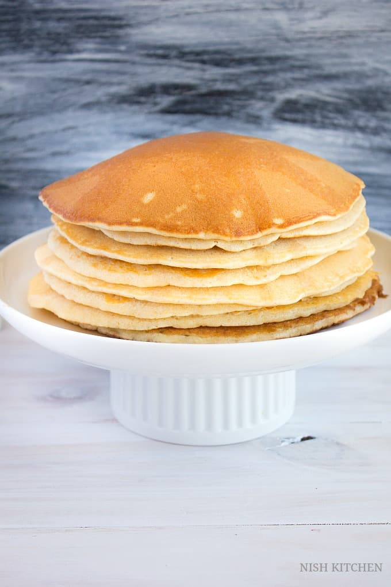

Pancake Recipe

Pancake Description
Light, fluffy, slightly sweet, with a hint of salt, this souffle pancake has become a family favorite. My husband combined a couple of different recipes and added his own twist. Serve with warm syrup and/or fresh fruit.
Ingredients
- 6 tablespoons salted butter
- 7 large eggs
- 1,5 cups all-purpose flour
- 1.5 cups milk
- 2 tablespoons white sugar
- 1 tablespoon lemon juice
- 1 teaspoon salt
- 1 teaspoon baking soda
- ½ teaspoon vanilla extract
- 5 fresh strawberries, sliced, or to taste
- 1 tablespoon confectioners' sugar, or to taste
Steps
- Set a rack in the middle of the oven and preheat to 350 degrees F (175 degrees C).
- Melt butter in a 12-inch oven-proof skillet over low heat, 3 to 5 minutes. Remove from heat.
- Separate eggs, placing egg whites in a large bowl and egg yolks in a medium bowl. Add flour, milk, sugar, lemon juice, salt, baking soda, and vanilla extract to the bowl of yolks. Add 3 tablespoons melted butter; lightly mix into a slightly lumpy batter. Let batter rest while whipping egg whites.
- Whisk egg whites into stiff peaks using a wire whisk or electric mixer. Gently fold batter into the egg whites.
- Return the skillet to medium-high heat. Pour in batter just before butter starts to brown. Cook until slightly set, 2 to 3 minutes. Drop in sliced strawberries until they are mostly submerged.
- Transfer the skillet to the oven. Bake souffle until top is light brown and center is set and doesn't jiggle when shaken, about 25 minutes. Broil until top is dark brown in color, about 2 minutes.
- Slide pancake onto a plate and sprinkle confectioners' sugar on top.
Cooking Notes
The cook time of this depends on so many factors that I cannot accurately estimate time. It takes our oven about 25 minutes for the souffle to be done.
Use blueberries or bananas instead of strawberries if preferred.
Main Page